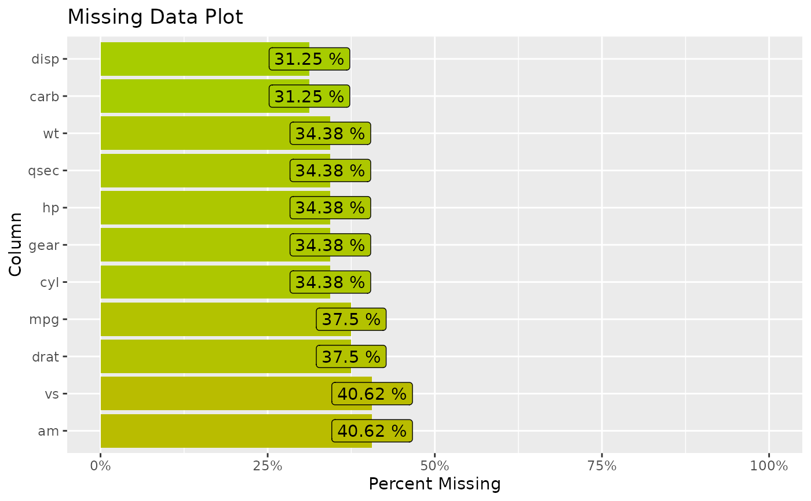

Features Percent Missing
features_percent_miss.RdCount the number of missing elements of each column in a data frame. Allows for threshold setting to easily find columns with higher percent missing data. Allows users to supply list of things that might also be be considered missing.
This function creates a bar plot showing the percentage of complete values for each feature in a data frame or tibble.
Usage
features_percent_miss(data, percent_miss = 0, na_list = NULL)
# S3 method for features_percent_miss
plot(x, add.label = TRUE)Arguments
- data
a data frame or tibble or something that could become one
- percent_miss
numeric between 0 an 1 will filter out any columns that are missing more than this value
- na_list
list of elements to allow SumNa to think of as NA
- x
An object of class 'features_percent_miss' returned by the
features_percent_missfunction.- add.label
logical add percent labels to graph, defaults to TRUE
Value
a tibble (data frame) with columns: feature, SumNa (sum of NA entries), SumComp, PctNa, PctComp
A ggplot object representing the bar plot.
Examples
mtcars |>
missing_at_random(1/3) |>
features_percent_miss()
#> # A tibble: 11 × 5
#> feature SumNa SumComp PctNa PctComp
#> <chr> <int> <int> <dbl> <dbl>
#> 1 cyl 14 18 0.438 0.562
#> 2 carb 14 18 0.438 0.562
#> 3 vs 13 19 0.406 0.594
#> 4 disp 12 20 0.375 0.625
#> 5 am 12 20 0.375 0.625
#> 6 drat 11 21 0.344 0.656
#> 7 qsec 10 22 0.312 0.688
#> 8 gear 10 22 0.312 0.688
#> 9 mpg 8 24 0.25 0.75
#> 10 wt 7 25 0.219 0.781
#> 11 hp 3 29 0.0938 0.906
mtcars |>
missing_at_random(1/3) |>
features_percent_miss(na_list = c(""," ","NA")) |>
plot()
